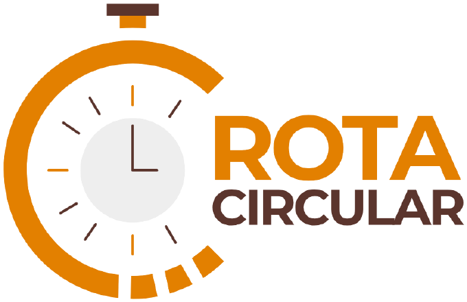
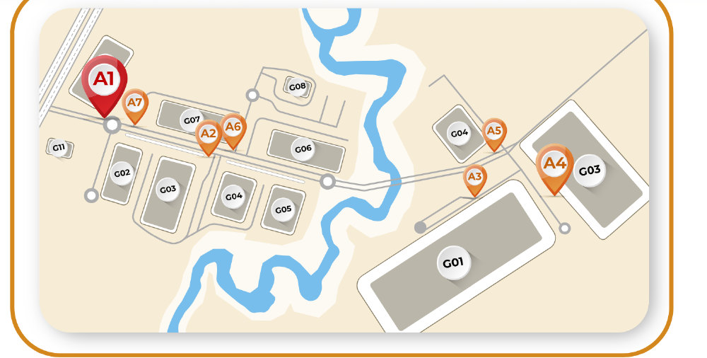

Van exclusiva para circulação na área interna do condomínio multimodal, sem custos.
Confira abaixo os dias, horários e rotas que melhor atendem você.
Dias, horários e rotas
Segunda à quinta
| Início | Fim | Tempo |
|---|---|---|
| 07:50 | 08:05 | 00:15 |
| 11:30 | 11:40 | 00:10 |
| 11:40 | 11:50 | 00:10 |
| 11:50 | 12:00 | 00:10 |
| 12:00 | 12:10 | 00:10 |
| 12:10 | 12:20 | 00:10 |
| 12:20 | 12:30 | 00:10 |
| 12:30 | 12:40 | 00:10 |
| 12:40 | 12:50 | 00:10 |
| 12:50 | 13:00 | 00:10 |
| 16:00 | 16:15 | 00:15 |
Sexta
| Início | Fim | Tempo |
|---|---|---|
| 07:50 | 08:05 | 00:15 |
| 11:30 | 11:40 | 00:10 |
| 11:40 | 11:50 | 00:10 |
| 11:50 | 12:00 | 00:10 |
| 12:00 | 12:10 | 00:10 |
| 12:10 | 12:20 | 00:10 |
| 12:20 | 12:30 | 00:10 |
| 12:30 | 12:40 | 00:10 |
| 12:40 | 12:50 | 00:10 |
| 12:50 | 13:00 | 00:10 |
| 15:00 | 15:15 | 00:15 |
- Percurso total (Rota Vermelha + Amarela)3,19 km
- Percurso Rota Vermelha1,59 km
- Percurso Rota Amarela1,60 km
- Tempo total da rota15 min
- Velocidade média na rota30 a 40 km/h
- Tempo total semanal10h
Locais de embarque e desembarque

- A1Gate — partida e chegada
- A2MM1 Portaria B e Apoio G04
- A3MM2 Portaria A — GPA
- A4MM2 Portaria B — MELI
- A5MM2 Portaria C
- A6MM1 Portaria C e Truck Pátio
- A7MM1 Portaria E
www.conebr.com · @conebr_ · /company/cone-sa